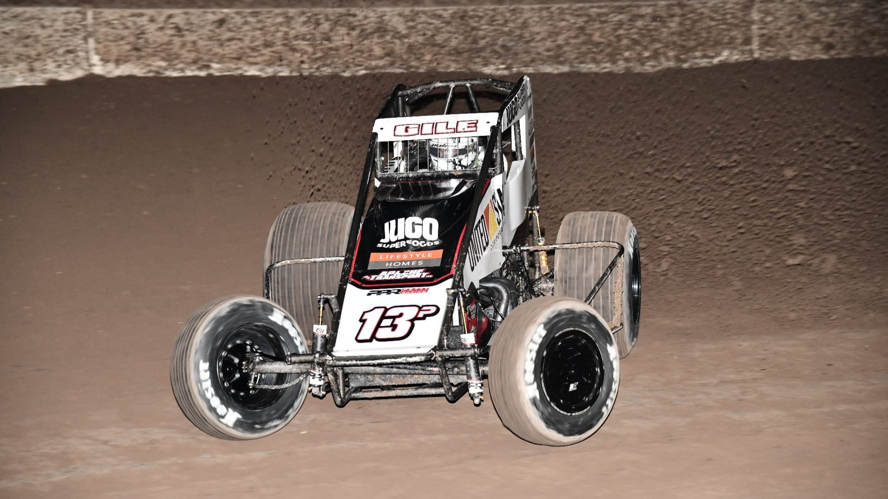

Elijah Gile Sweeps Dennis Matousek Memorial as R.J. Johnson Wins Sixth USAC Southwest Title
Gile led the final 11 laps at Casa Grande, Ariz., on Saturday, Nov. 21, and Petty Performance Racing took the top three spots. Runner-up R.J. Johnson clinched the series title.

Elijah Gile won the 25-lap USAC Avanti Windows & Doors Southwest Sprint Car feature at Central Arizona Raceway in Casa Grande, Arizona, on Saturday, Nov. 21, according to USAC. The win completed his sweep of both nights of the second Dennis Matousek Memorial Race. Gile’s Petty Performance Racing teammate R.J. Johnson finished second and clinched his sixth career USAC Southwest Sprint Car championship, USAC said.
Gile started third. J.J. Yeley led the first lap, and Johnson led laps 2 through 9. Gile led lap 10, Johnson led laps 11 through 14, and Gile led laps 15 through 25, according to the official lap leaders. USAC said Gile passed Johnson for the lead in turn one on lap 15 and won by 7.898 seconds for his third career USAC Southwest Sprint Car win. Petty Performance Racing swept the top three, with Cameron La Rose in third. Stevie Sussex was fourth and Yeley fifth. Dayton Shelton, Connor Lundy, Koen Crawford, A.J. Hernandez and Bruce St. James completed the top 10 in the 22-car feature.
Johnson also won the USAC Southwest title in 2013, 2014, 2015, 2016 and 2017, USAC said. According to USAC, he is the first driver to win the USAC CRA 410 and USAC Southwest 360 sprint car championships in the same season, a feat he shares with car owner Jerry Petty. Earlier this season, Johnson won his third straight USAC CRA Sprint Car title.
Gile set fast time at 15.584 seconds among 23 qualifiers, USAC said. Yeley won the dash, and Sussex, Shelton and Johnson won the three eight-lap heat races. According to USAC, the race honors Gile’s great-grandfather Dennis Matousek, an Arizona Racing Association sprint car champion and Arizona Motorsports Hall of Fame inductee. Gile also won the inaugural edition in 2025, and he won Friday’s opening night.